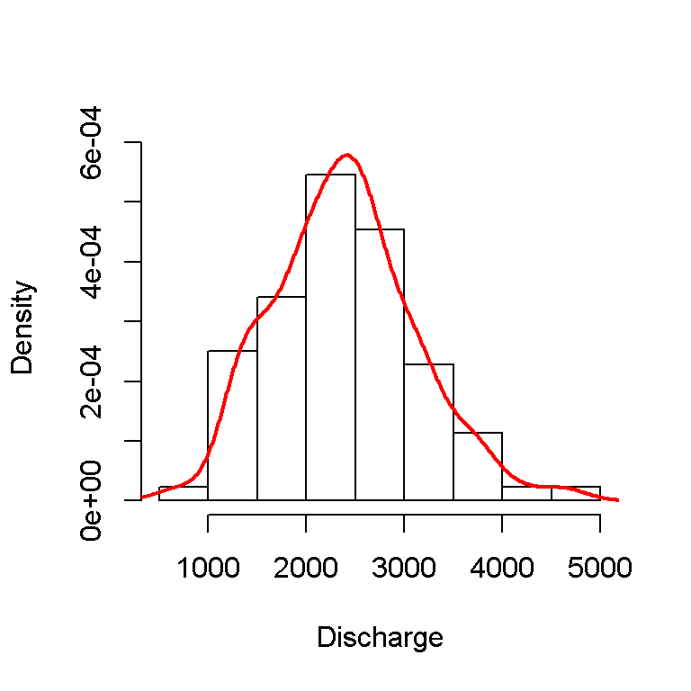

Section 2 Annual maximums
2.1 Introduction
In this document I will show how to use floodnetRfa to perform at-site
frequency analysis using annual maximum discharge.
First we will extract the annual maximums from the
daily discharge data of the Saint-John River at Fort Kent (NB).
Note that incomplet year with missing observations will be removed.
In total 88 annual maximums are extracted and showed in a histogram.
library(floodnetRfa)
anData <- ExtractAmax(flow ~ date, flowStJohn, tol = 365)
npDens <- density(anData$flow)
hist(anData$flow,
freq = FALSE,
main = '',
xlab = 'Discharge',
ylim = c(0, max(npDens$y)))
lines(npDens, col = 2, lwd = 2)
In stationary situation, the annual maximums are assumed to be independant and identically distributed. Risk is then measure in terms of return period that characterizes the average time separating two events of the same magnitude. In practice this is equivalent to calculate the probability \(p = 1-1/T\) of a fitted distribution. The test of Mann-Kendall is frequently performed to verify if the data contains a significant trend that would invalidate the assumption of stationarity. The present data have a p-value of 0.21, which does not suggest the present of a trend.
Figure 2.1: Trend in the annual maximums
##
##
## Mann-Kendall Test for trend
## S: 346
## p-value: 0.21362.2 Estimation of the flood quantiles
According to extreme value theory, as the number of annual maximums increase, their distribution converge to Generalized Extreme Value (GEV) distribution
\[\begin{equation} F(x) = \exp\left\{ - \left[ 1 - \kappa \left(\frac{x-\xi}{\alpha} \right) \right]^{1/\kappa} \right\} \tag{2.1} \end{equation}\]
The GEV distribution in Equation (2.1) can be fitted using the FitAmax function.
The example below shows how the parameter are estimated using the
maximum likelihood method.
See for instance (Coles 2001).
A brief summary of the fitted model is reported, including the estimated parameter,
their standard deviation and the sample L-moments.
##
## At-site frequency analysis
##
## Distribution: gev
## AIC: 1411
## Method: mle
## Estimate:
## xi alpha kappa
## 2101.3761 668.9518 0.1667
##
## Std.err:
## xi alpha kappa
## 78.39437 54.31311 0.06214
##
## Lmoments:
## l1 lcv lsk lkt
## 1 2390 0.17 0.05924 0.1399The flood quantile of the GEV distribution can be obtained from the formula
\[
x_T = \mu + \frac{\alpha}{\xi}\left[ 1+\log(1/T)^\kappa \right] .
\]
These predicted value are computed using the predict function.
In the example below show the flood quantile for return period 2, 5, 10, 20, 50
and 100.
The standard deviation of the flood quantiles is estimated using the Delta
method that assume that the estimated parameter follow a Normal distribution.
| pred | se | lower | upper |
|---|---|---|---|
| 2339.216 | 82.44124 | 2177.634 | 2500.798 |
| 2989.156 | 99.81724 | 2793.518 | 3184.794 |
| 3356.637 | 117.79148 | 3125.770 | 3587.504 |
| 3668.464 | 144.52611 | 3385.198 | 3951.730 |
| 4020.327 | 193.47341 | 3641.126 | 4399.528 |
| 4250.404 | 238.46296 | 3783.025 | 4717.783 |
2.3 Verification of the model
The return level plot in 2.2 provide a visual assessment of the fitted distribution by comparing the sample and the predicted flood quantiles. The graphic below shows a good agreement between the two.
Figure 2.2: Return level plot for Saint-John River at Fort Kent, NB.
Another diagnostic to ensure that the GEV distribution is appropriate is the Anderson-Darling test. The p-value superior to 0.05 indicates that the hypothesis of a GEV cannot be rejected.
##
## Goodness-of-fit test for annual maxima
##
## Test = Anderson-Darling
## Distribution = gev
## statistic : 0.266
## p-value : 0.534References
Coles, S. 2001. An Introduction to Statistical Modeling of Extreme Values. Springer Verlag.